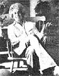

From Four Arguments for the Elimination of Television by Jerry Mander, copyright© 1977 by the author. Reprinted with the permission of William Morrow and Company, Inc. Available in paperback for $4.95 from any good bookstore or for $4.95 plus 95 cents shipping and handling from Mother's Bookshelf, p.0. Box 70, Hendersonville, North Carolina 28739.
What's the matter with our modern, technologically based society anyway? Why isn't it more satisfying? Why do so many of us now feel that some vague something hounds us and diminishes us and makes us into something less than we should be? Most specifically of all, do we really use televisionand so many other "benefits" and "tools" of our technological age-or does it use us? Jerry Mander (see photo) speaks the unspeakable and asks the unaskable in a remarkable new book that is being completely serialized in this magazine. This is the ninth installment in the series.
Along with the venality of its controllers, the technology of television predetermines the boundaries of its content. Some information can be conveyed completely, some partially, some not at all. The most effective telecommunications are the gross, simplified linear messages and programs which conveniently fit the purposes of the medium's commercial controllers. Television's highest potential is advertising. This cannot be changed. The bias is inherent in the technology.
The technical limitations already described conspire to create a far deeper and much more serious problem for television: It is inherently boring.
With information confined to only two sensory modes, with sensory synesthesia shifted, with low-definition imagery, with the total loss of context (aura and time), and with viewers whose thought processes are dulled, the producers of television programs begin with a difficult task. How to create interest through a medium that is predisposed to turn people off?
My friend Jack Edelson has put it this way: "It's the most curious thing; when I watch television I'm bored and yet fixated at the same time. I hate what I'm watching and I feel deeply disinterested but I keep watching anyway." His statement was echoed by dozens of letters I have received, and children describe their TV experience in similar terms.
The hypnotic-addictive quality of the medium goes a long way to keep the bored viewer fixated before the screen. So does the fact that our mediated environments don't offer much by way of stimulation. TV is the only action. However, there is much more to this bored fixation than that. Television producers and directors, deeply aware of the inherent limitations of the medium, have developed a vast technology of tricks-a technology of attachment, actually-that can succeed in keeping a viewer engaged despite the lack of any real desire to be watching. Most of the techniques were originally developed by advertising people, who have always had vast amounts of money available for experiments and whose raison d 'etre is to develop technologies to fixate the viewer.
Most of the techniques are rooted in an exploitation and inversion of a single emotionally based human tendency: interest in "highlighted moments."
I have described the Amazon Indians' means of discovering, understanding and interacting with their forest environment. The events that caused them the greatest alarm were the unique, the out of the ordinary: a broken twig that could not be explained, or a distant sound that had not been heard before. It is the unusual that urges increased attention.
You can experience this yourself the next time you're out walking. Whether in a city or in a country meadow, the field of images, sounds, smells proceeds into you without your particularly noticing them. Then, an extraordinary event will occur. A bird will dive nearby, a boulder will roll across the path, a car will screech to a halt. You snap into a more alert condition, a decision may be required. A thought results.
Obviously being alert to the unusual moment is useful for survival. But aside from survival, the sensory interest in the unusual is a means toward gaining knowledge and pleasure.
Knowledge is gained by discerning change, by noting the event that is different from all others, by making distinctions and establishing patterns. The fiftieth time you watch afield of daisies you can still learn something new about natural form since no two observations are alike. Then there is the clearly special event: the single ten-foot daisy or the hole appearing where none had been the day before.
In both cases, the extraordinary induces notation, study, and eventually knowledge. "Sometimes in a field of daisies," one might say, "one daisy will grow abnormally large." That is knowledge. "It is the same with bears and foxes." This is a second level of knowledge. "Perhaps animals are like plants; I must watch for further examples of this."
A process of self-education about planetary patterns has begun. The observation of differences is at the heart of the knowledge.
The senses are just as attuned to differentiation as the mind. We notice wa ter or someone else's skin against our own because the moment of the touch is different from the moment before the touch. As the same touch is repeated over and over, we slowly sink back into automatic pilot. Although there can be comfort and security in the routine and the repetitive, the most stimulating event is the creative one, the new one.
Television is an exceedingly odd phenomenon. On the one hand it offers nonunique, totally repetitive experience. No matter what is on television, the viewer is sitting in a darkened room, almost all systems shut down, looking at light.
But within this deprived, repetitive, inherently boring environment, television producers create the fiction that something unusual is going on, thereby fixing attention. They do this in two ways: first, by outrageously fooling around with the imagery; second, by choosing content outside of ordinary life, thereby fitting the test of unusualness.
These two tactics combine to create a hierarchy of production standards that in the trade are lumped together as "good television." As we shall see, the term applies more to a quality of manipulation than a quality of content. I shall take these one at a time.
When you are watching television, you are seeing images that are utterly impossible in nature. This in itself qualifies the imagery for your attention, even when the content within the image is nothing you'd otherwise care about. For example, the camera can circle the subject. It can rise above it or go below it. It can zoom in or back away from it. The image can be changed in size or made to fade and reappear. Editors make it possible for a scene in one room to be followed instantly by a scene in another room, or at another time, or another place. Words appear over images. Music rises and falls in the background. Two images or three can appear simultaneously. One image can be superimposed on another on the screen. Motion can be slowed down or sped up.
None of these effects is possible in unmediated imagery. When you lift your eyes from this paper and look around your room, it doesn't become some other room or some other time. It could not possibly do that. Nor does your room circle around you or zoom back away from you. If it did do that, you would certainly pay one hell of a lot of attention to it, just as you would to anything new and unexplained that appeared in your field of vision.
Through these technical events, television images alter the usual, natural imagery possibilities, taking on the quality of a naturally highlighted event. They make it seem that what you are looking at is unique, unusual and extraordinary.
Attention is stimulated as though something new or important was going on, such as landslides, gigantic boulders or ten-foot daisies. But nothing unusual is going on. All that's happening is that the viewer is watching television, which is the same thing that happened an hour ago, or yesterday. A trick has been played. The viewer is fixated by a con spiracy of dimmed-out environments combined with artificial, impossible, fictitious unusualness.
To get an idea of the extent to which television is dependent upon technical tricks to maintain your interest, I suggest you try the following experiment, which I call the Technical Events Test.
Put on your television set and simply count the number of times there is a cut, a zoom, a superimposition, a voice-over, the appearance of words on the screen -a technical event of some kind.
You will find that it goes something like this.
You are looking at a face speaking. Just as you are becoming accustomed to it, there's a cut to another face. ( technical event ) Then there might be an edit back to the first face. ( technical event ) Then the camera might slowly draw back to take in some aspect of a wider scene. ( technical event ) Then the action suddenly shifts outdoors to the street. ( technical event ) Intercut with these scenes might be some other parallel line of the story. It may be a series of images of someone in a car racing to meet the people on that street we have just visited. ( technical event ) The music rises. ( technical event ) And so on.
Each technical event-each alteration of what would be natural imagery-is intended to keep your attention from waning as it might otherwise. The effect is to lure your attention forward like a mechanical rabbit teasing a greyhound. Each time you are about to relax your attention, another technical event keeps you attached.
The luring forward never ceases for very long. If it did, you might become aware of the vacuousness of the content that can get through the inherent limitations of the medium. Then you would be aware of the boredom. If, for example, the camera made no movements and there was no cutting in time and place; if one camera merely sat in one place and recorded the entire length of a conversation, including all the pauses, redundancies, diversions, inaction-the way conversations happen in real life and real time-you would be disinclined to watch for very long. The program would have to be hours long before much of anything happened. Television can't wait for this, so it stimulates your interest technically.
Once you actually try the Technical Events Test you will probably find that in the average commercial television program, there are eight or ten technical events for every sixty-second period. That is, the flow of natural imagery is interrupted eight or ten times every minute, and sometimes much more often than that.
You may also find that there is rarely a period of twenty seconds without any sort of technical event at all. That may give you an idea of the extent to which producers worry about whether the content itself can carry your interest.
One can only guess at the effect upon viewers of these hyperactive images, aside from fixating attention on the television set. Dr. Matthew Dumont, mentioned earlier, says these technical effects help cause hyperactivity among children. They must surely also contribute to the decline of attention span and the inability to absorb information that comes muddling along at natural, reallife speed.
To be constantly buffeted by bizarre and impossible imagery cannot help but produce stress in viewers. To have one's attention interrupted every ten seconds must jar mental processes that were otherwise attuned to natural, personal informational rhythms in which such interruptions would be literally maddening.
Leaving the television set to go outdoors, or to have an ordinary conversation, becomes unsatisfying. One wants action! Life becomes boring, and television interesting, all as a result of a system of technical hypes.
Meanwhile, the speed and activity of commercial programming are further exaggerated in advertising.
When you try the Technical Events Test on a few thirty- or sixty-second television commercials you will find that advertising has roughly twice the technical action of the already hyped-up programs that the ads interrupt. On the average, a thirty-second commercial will have from ten to fifteen technical events. There is almost never a six-second period without a technical event. What's more, the technical events in advertising have much more dimension than those in the programming. In addition to the camera zooms, pans, rolls and cuts, they are far more likely to have words flashing on and off the screen, songs going on and off, cartoon characters doing bizarre things, voice-overs, shots from helicopters and so on.
If regular television programming is hard-pressed to maintain your attention without tricks, advertisers have the problem many times over. In regular programming. at least there are stories or news, something of interest. Within television's limits, regular programming has the option to present relevant content. Advertising content has no inherent interest at all. The content is always the same. The image may be a seascape and the product is beer. Or it may be a landscape and the product is cars. Or it may be a home and the product is coffee. Whatever the setting, the content of advertising is always a sales pitch. There is nothing inherently interesting in this. It is worse than boring; it is annoying. So tricks must be used in every advertisement. Maxwell Arnold, a San Francisco advertising man who is one of the industry's few outspoken critics, once told a radio interviewer: "Who the hell would choose to watch ads if there wasn't something going on aside from the content?" In the absence of interesting content, technical style is the name of the game.
Advertisers spend staggering amounts of money to achieve their technical successes. The average production budget for a minute of advertising is roughly ten times the cost of the average minute of programming. It is not at all unusual for a thirty-second commercial to have a production budget of fifty thousand to one hundred thousand dollars, enough to cover the total costs of many half-hour programs. This money is spent in techniques, and research upon techniques, to obtain your interest where there would otherwise be none. The frequently heard comment, "You know, I sometimes think advertising is the most interesting thing on television," is a testament to the success of these expenditures.
Advertisers are the high artists of the medium. They have gone further in the technologies of fixation than anyone else. But the lesson has also been learned by producers of the programs, and finally, by politicians.
During the Ford-Carter presidential campaign, at the point that Ford was gaining on Carter with incredible rapidity, the technicalevents ratio between the commercials of the two was about four to one in favor of Ford. If Ford had spent a little more advertising money, and if the campaign had gone on another few days, I believe he would have passed Carter, no matter what the messages within their commercials. Because of the central role television now plays in campaigning, advertising technique has become more important than content in the American political arena.
"Advertising technique has become more important than content in the American political arena."
The fact that advertising contains many more technical events per minute than commercial programming is significant from another, more subtle perspective. Advertising starts with a disadvantage with respect to the programming. It must be more technically interesting than the program or it will fail. That is, advertising must itself become a highlighted moment compared with what surrounds it.
If advertising failed to work on television, then advertisers would cease to sponsor the programs, leading, at least as things are presently structured, to the immediate collapse of television's economic base. If the programs ever become too interesting, that will be the end of television. The ideal relationship between program and commercial is that the program should be just interesting enough to keep you interested but not so interesting as to actually dominate the ads.
This applies to technique as well as content. On the rare occasion when something real or gripping appears on television-the SLA shootout, President Kennedy's funeral, an emergency presidential address-and the viewer is awakened from lethargy by the emergence of real highlighted content, as opposed to technique, advertisers make every attempt to cancel their spots. They will say they are doing this because it is in "bad taste" to advertise in such moments.
But when is advertising not in bad taste? Do they mean that interrupting people's lives to start hawking products is not rude and offensive behavior at any time? If someone came to your door every night to do that, you would soon call the police. Advertising is always in bad taste. What advertisers mean when they use the "bad taste" excuse is that when something really real happens on television, it may affect how well the ad works. In the context of concrete reality, advertising can be understood as vacuous, absurd, rude, outrageous. Advertising can succeed only in an environment in which the real merges with the fictional, and all becomes semireal with equal tone and undifferentiated meaning. In that context advertising can use its technical tricks to jump forward out of the medium, creating its artificial unusualness. The best environment for advertising is a dull and even one, where it can become the highlighted event.
This explains the tendency to sponsor programs that have that quality of even tone, from Walter Cronkite to Archie Bunker to Kojak. They all merge with each other, making an appropriate backdrop for the advertising. In probably the most brilliant article that has ever been written on television ("Sixteen Notes on Television," reprinted in Literature in Revolution ), Todd Gitlin said: "The commercial is the purpose, the essence; the program is the package."
The program is only the excuse to get you to watch the advertising. Without the ads there would be no programs. Advertising is the true content of television and if it does not remain so, then advertisers will cease to support the medium, and television will cease to exist as the popular entertainment it presently is.
What about noncommercial television? Is this an exception to the rules of artificial unusualness?
Popular wisdom holds that noncommercial public television competes so ineffectively, in terms of audience ratings, because of the "low tastes" of the viewing public. I have heard many a liberal put it that "we need to educate people to appreciate better sorts of programming." I can barely restrain my anger at the arrogance, cynicism, and ignorance of this position.
If you will go back to your noncommercial channel, you will find that except for documentary footage there are usually only two or three technical events in every minute of programming and that these are more likely to be of the simpler sort: camera switching, panning and zooms. Because they are not as well funded as their commercial competitors, noncommercial television producers can afford only about 25 percent as much technical gimmickry as the commercial stations. In the end, the ratio works out about this way:
Advertising: 20-30 technical events per minute.
Commercial program: 8-10 technical events per minute.
Public television: 2-3 technical events per minute.
The technical events are surely not the sole determinants of viewer interest and appeal, but they are far more logical an explanation for the popularity of certain programming than the assertion that people demand violent programs. What people desire is involvement and interest. In a world where real involvement and unique events are more and more remote from direct personal experience, and in a medium that is inherently dulling, it's a wonder that any people at all are able to make their way through any noncommercial programs with their small degree of technical effects. In fact, I find it a rather moving testimony to the vitality of people that they continue to seek content that has not been jazzed up and packaged.
This is all aside from the question of whether public television programs are any better than commercial programs. In fact most public television producers have the same system of values as their commercial counterparts and for the same reasons. Recognizing that hype is needed for ratings in such an intrinsically turned-off medium, and that the ratings are just as much a determinant for funding in public television as commercial television, they put as much money as possible into technique. They operate out of the same standards of "good television." They even gain support from the same corporations that dominate commercial television: oil companies and chemical companies.
It is sometimes considered a mitigating factor that the commercial message in public television is limited to a low-key acknowledgment at the beginning and the end of the program. But these companies are not attempting to achieve exactly the same effect on public television as they do on commercial TV. There is a different level of benefit to corporations who insinuate themselves into this socalled noncommercial environment. The benefit is company identification rather than product identification. This has long-run value in public relations terms rather than short-run gains in sales. In addition, having the name repeated in a noncommercial format can still set off the neuronal billboard that has been previously implanted in the brain by commercial programs. Finally, the cost of these low-key acknowledgments is negligible. To have its name appear on the screen before and after a half-hour program may cost a corporation only a few thousand dollars. Underwriting an entire half-hour program on public television usually costs less than one sixty-second spot in commercial television.
Aside from these differences, public television is similar to the rest of television. Competing for many of the same dollars, the same ratings, the same markets and operating in the same medium with the same technical limitations, the noncommercial producer must make very similar choices.
The best proof can be found in the most successful public television shows. Sesame Street, for example, the most popular program in public television history, has a technical events ratio equal to and sometimes larger than its commercial competition.
It is not well enough appreciated, I think, that Sesame Street was conceived, designed and executed from its inception by exadvertising people. Using every technique they learned in advertisingrapid cutting, interspersing of songs and cartoons, very short time spans-their show has been found more "interesting" than any public TV program that preceded it. This "interest" is based on technique and these are the same techniques used in advertising.
In Favor of "Alienated" Viewing
The Technical Events Test is extremely subversive to television. This is one reason I have asked you to do it. As people become aware of the degree to which technique, rather than anything intrinsically interesting, keeps them fixed to the screen, withdrawal from addiction and immersion can begin. I have seen this happen with my own children. Once I had put them to the task of counting and timing these technical events, their absorption was never the same.
When viewers become alert to the technology being used upon them, they can separate technique from content. With the effects of technique stripped away, the true content of the program has to stand on its own. In the case of advertising, it falls apart. Regular programming also assumes its true worth and it is often even less than you may have imagined was possible.
As you become able to pull back out of the immersion in the TV set, you can widen your perceptual environment to again include the room you are in. Your feelings and personal awareness are rekindled. With self-awareness emerging you can perceive the quality of sensory deadness television induces, the one-dimensionality of its narrowed information field, and arrive at an awareness of boredom. This leads to channel switching at first and eventually to turning off the set.
Any act that breaks immersion in the fantastic world of television is subversive to the medium, because without the immersion and addiction, its power is gone. Brainwashing ceases. As you watch advertising, you become enraged.
The great German dramatist Bertolt Brecht used the term "alienation" to describe this process of breaking immersion. Writing during the early thirties, Brecht used the term to mean the shattering of theatrical illusion. By breaking immersion in the fantasy the theatergoer becomes self-aware and attains a mental attitude that allows discernment, criticism, thought and political understanding of the material on display. Without "alienation," involvement is at an unconscious level, the theater-goer absorbing rather than reflecting and reacting. Brecht argued that becoming lost or immersed in the words, fantasies and entertainments of theater was preparation for similar immersion in words and fantasies of theatrical leadership: Hitler.
Brecht, like Walter Benjamin, felt that the entire development of art during the thirties furthered ways of mind suitable for autocracy. Brecht developed his concept of "alienation" in order to break the form of the theatrical relationship. To accomplish this, he would interrupt the line of the theatrical action; or have the actors step out of their parts to speak directly to the audience personally or politically; or add such elements as placards. In films, he would put words on the screen to explain the meaning of a scene that might otherwise have been received as "entertainment," thereby shattering unconscious absorption.
In Brechtian terms, if an actor developed a character in such a way that the audience became absorbed in the character rather than the meaning of the character, then the actor would have failed. The goal was that each member of the audience become aware that he or she is in a theater, that actors are performing, that the characters are created on purpose to convey a message, and that the message applies directly to each person in the audience. In this way, theater had the capacity to become educational in a revolutionary way, capable of moving people to action. Without this shattering of illusion, Brecht felt, theater remains an example of mindless immersion within an autocratic format. And yet, because theater involves a live public performance, the possibilities for technically created illusion are far fewer than in film or television.
It is this very quality of "alienation" from the illusion, the experience of self-awareness, that advertisers and program producers go to such lengths to avoid. They may not actually be thinking to themselves: "I have got to keep these viewers hyped and away from boredom or I'll lose them." Instead, they define some production values as "good television" and others as "bad television." They will do anything they can to develop and keep your fixed gaze and total involvement. They've found that technical tricks do better than content because, as we have seen, the content loses too much in the translation through the medium to be engrossing on its own.
However, they do also choose content for its immersive and hyperactive value. In addition to shattering your normal perceptual patterns by artificially unusual imagery, dragging your mind and awareness forward, never allowing stasis or calm or a return to self-awareness, producers must also make program choices that fit the process.
The Bias to Highlighted Content: Toward the Peaks, Away From the Troughs
At one end of what we might think of as the spectrum of personal experience, there is the occasional momentous event. Emotionally engulfing. Intellectually overpowering. These experiences happen to everyone, but they are rela tively rare. Between these "highs," life moves along from routine experience to routine experience, flowing one into the next, developing the overall pattern that is life's true content.
When you sit down in a cafe with a friend, you don't need to have an orgasm for the experience to be worthwhile. Perhaps nothing will happen in that hour or two. No exclamations of passion. No news of dire events. No shoot-outs at the next table or in the street. Perhaps you will merely converse or watch the passing parade. Perhaps you will explore some obscure detail in your friend's feelings or personal history. Perhaps you will muse about fashion. Most coffeehouse conversations, like the rest of life, will go more or less that way.
Ordinary life contains peaks and valleys of experience, highs and lows, long periods of dormancy, many periods of quiet, indecision, ambiguity, resolution, failed resolution. All of these fit into a wide pattern that is the way life is actually lived.
Included within this pattern are occasional highlighted events: great shocks, unexpected eruptions, sudden achievements do occur. Life would be frustrating without such catharsis and excitement, but life would be bizarre and maddening if it had too many of these peak events.
Much of the nervousness in the world today in both individual and national life may be attributable to the density and power of experiences prearranged for our consumption. Too much happens too fast to be absorbed and integrated into an overall pattern of experience.
"The program should beinteresting but not so interesting that it actually dominates the ads.
It is no accident that the world outside television has concentrated increasingly on large and cathartic events. All artificial environments and the consumer life encourage focus on peak events. When nature is absent, so is natural subtlety. Personal attunement to slower, naturebased rhythms is obscured. We focus on the "hits" that are provided, and these reduce more and more to commodities. Every commodity is advertised as offering a bigger and better and more powerful experience than the one that preceded it. Since life's experiences have been reduced to packaged commodities, like the chimpanzee in the lab, that is what we seek.
Television, in addition to being the prime exponent of the commodity life, makes a direct contribution to distorting life in the direction of highlighted experiences by choosing its contents to fit this pattern. It is a technological necessity that it do so.
Since television is such a vague and limited medium, so unlikely to produce much of any response in a viewer, producers must necessarily divide all content into two distinct categories: peaks and troughs, the highlighted and the routine, always choosing the former and not the latter. In this way, the choices in content match the technical bias toward artificial unusualness and also the tendencies of the wider commoditybased, artificial environment.
The programming bias is always toward the more vivid, more powerful, more cathartic, more definite, "clean" peaks of content. The result . . . not the process. The bizarre . . . rather than the usual.
In 1973, a wealthy young man leased a small suburban television station near San Francisco and tried the most curious experiment.
He presented only two programs every day. One occupied most of the day with images of ocean waves rolling to shore. One camera, no editing, no zooms. It just sat there and transmitted whatever the ocean did.
Then he switched to another single camera in an empty studio facing a blank wall. He invited everyone to do whatever he or she wished in front of the camera. Some people spoke into it; others tried more sensational behavior.
"Television's biastoward the peaks of content is possibly most tragic when it comes to news. "
The first thing that was revealed by this experiment, which was practically an inversion of the usual television fare, was the extent to which the medium depends upon its technical events. A single stationary camera, picking up whatever passes through the frame, in real time, without alteration, will only bore people. If a professional producer-editor had gotten hold of that ocean footage, she or he could have created more interest in it. She or he could have zeroed in on details, shot from a helicopter following the waves forward, switched to a camera on the beach looking outward, and so on. With a little music, a nice little art piece might have been made out of it. But it would be engaging only for a short while.
No matter what technical tricks are used, ocean footage will not work for very long on television. It does not fit the test of highlighted moments. The experience of looking at oceans is beyond television's ability to deliver. To enjoy an ocean, one must be in a timeless condition, contemplative yet alert to the small changes in the sea and the life it supports. If you are looking for action and catharsis, watching an ocean will only bore you. Watching it on TV is even worse. You lose the salt smell, the wind, the lazy detail of the foam and light on wet sand and the sense of vast time and space. Television would also lose the nuances of a commonplace visit to a coffeehouse. The mundane conversation and people moving around or reading the paper would be profoundly boring to viewers sitting at home in their living rooms, unless, of course, some clown appeared and started tripping over everyone's feet while dropping trays, and then someone began to throw pastries around or spilled cappuccino on people's heads, or a bakery truck loaded with lemon meringue pies came crashing through the glass window. Now we're getting somewhere. Action.
In practice, no TV producer would ever seriously consider either oceans or coffeehouses as subject matter. They are intrinsically and obviously wrong subjects for the medium, "bad" television.
On the other hand, there are a lot of talking shows on television. Some people think this is odd since television is supposed to be a visual medium. Well, since television is so indistinct a medium, and since so little visual information can get through it, most of what we receive from television really comes in the words. This is especially true of news shows. We see some action-fires, wars, picketing -but we can't really make much of it until a reporter tells us what is happening and orients our minds to perceive what we are actually not seeing at all. In many ways television is really radio. The only real effect of the imagery is to fixate us.
Another reason why there is so much talking on television is that you can see faces. Faces talk. So naturally there is a bias toward talking. Within the talking there is a bias toward a kind of highlighted conversation.
Television talking is very pointed. Subject oriented, rather than generalized. Focused, rather than free-ranging. This is particularly the result of time limitations and the need to be sure that something happens beyond the kind of talk that takes place in grocery stores.
On television people tend to skim along the highlights of the conversational material. Blank spaces, pauses, personal comments, asides, changes of mood, changes of attitude, changes of subjectall of the rhythms of ordinary conversation-are rarely allowed into television talk. To do otherwise would defy the medium's demand for frequent catharsis, repeated highlight and achieved goals.
Therefore talk show dialogues take on the same rhythms and follow the same values as dramatic programs or situation comedies or quiz shows or news. The dialogue moves from loaded line to loaded line, headline to headline, important pronouncement to important pronouncement, punch line to punch line, like Bob Hope's humor.
Verbal troughs are often written into dialogue shows. Many acting schools teach these. Talk show hosts and guests indulge briefly in "patter" which is pseudoaimless. But the process never advances very far. The goal remains a laugh or a point or a contention or an outrage or a shock. The conversation is never allowed to settle down to the rhythms of real life, because if it did, there'd be no point in having the television on at all. One could have aimless conversation with someone at the bus stop.
And so, as with the technically created artificial unusualness, content itself is usually chosen for its hyperactive effect. The survival of this dull, indistinct, inherently boring technological failure called television depends upon this effect.
Compared to football, baseball is an almost oriental game, minimizing individ ual stardom, requiring a wide range of aggressive and defensive skills, and filled with long periods of inaction and irresolution. It has no time limitations. Football, on the other hand, has immediate goals, resolution on every single play, and a lot of violence-itself a highlight. It has clearly distinguishable hierarchies: heroes and drones.
Baseball is virtually a process game. Not that baseball is a process the way oceans and coffeehouses and conversations and love are, but in the context of sports it is more process oriented than many games.
Soccer has even fewer peaks than baseball. The action flows over an immense field. Moments of focused concentration are rare. There is very little resolution from minute to minute.
Boxing, on the other hand, is very focused, involving constant action, frequent resolution and peaks of personal catharsis. Basketball, although it is a flow sport like soccer, is played on a small field and involves highlighted events-baskets-every few seconds.
Naturally football has totally overpowered baseball on television, and so have boxing and basketball. Meanwhile, soccer is rarely presented, and when it is, it communicates almost nothing.
Television, which is better suited to football and boxing than to soccer, is also better suited to any sporting event than to probing of alternative consciousness or natural environments, or any delving into relationships, all of which require emphasis on process: the in-between spaces.
Within the range of all human experience, and all possible programming, any sport contains more clearly highlighted action than, say, 99 percent of human relationships, except for those with a sexual or violent orientation.
The dramatic programs, featuring jealousy, hatred, desire, fear, humiliation, ebullience, are not only the most visible on television, they are also the most emotionally loaded, with the larger cathartic payoffs, like home runs or touchdowns or wars. They pass the test of highlighted content, providing visibility in a dimmed-out medium.
Television presents relationships in crisis; those that stand out from the usual fare of everyday life, which is not so explosive and dramatic most of the time. In the television world, relationships involve the same huge cycles of feeling as sports shows: big joys, great losses, ups and downs, sudden shocks and surprises, explosive passions, frequent catharsis. We get soap opera, Mary Hartman, Roots. Without crises, television drama would not be able to deliver any feeling. Conversation or smaller feelings-love, friendship, camaraderie-do not deliver on television. Violence does. It delivers fear. Producers and sponsors are well advised to make choices in favor of such programs. Fear qualifies as a bona fide pseudoexperience. It can fool viewers into believing that when they are watching television, some actual living is going on, when it isn't. In the long run, experiencing artificial fear over and over again when nothing dangerous is actually going on eventually dulls one's responses. One becomes less subject to television fear while at the same time more paranoid about the real world one actually experiences less and less.
The bias toward the peaks of content is possibly most tragic when it comes to news. Since much of life is now removed from our direct experience, the news that we get from afar becomes our total information on the forces that shape and move our lives. That makes the distortions in it a very serious matter.
When Walter Cronkite asserts, "And that's the way it is," he is surely aware that that's the way it is only within the very narrow range of world events that are communicable through television news, and within those events, only in those aspects that fit the standards of "good television."
Edward Epstein, in News from Nowhere, says, "Presenting events exactly as they occur does not fit with the requisites of television news .... Given the requirement that a network news story have definite order, time and logic, it would be insufficient in most cases to record from beginning to end the natural sequence of events, with all the digressions, confusions and inconsistencies that more often than not constitute reality . . .
"Cameramen seek out the most actionpacked moments; and editors then further concentrate the action. Even when an event is characterized by an unexpected low degree of activity, television can create the illusion of great activity. The relatively unenthusiastic reception General MacArthur received in Chicago during his homecoming welcome in 1951 thus appeared to be a massive and frenetic reception on television because all the moments of action were concentrated together .... In collapsing the time frame of events and concentrating the action into a continuous flow, television news tends to heighten the excitement of any group or other phenomena it pictures, to the neglect of the more vapid and humdrum elements. "
'Our job is to cut out all the dead wood and dull moments,' one NBC editor commented. The procedure involves routinely eliminating the intervals in which little of visual interest occurs, and compressing the remaining fragments into one continuous montage of unceasing visual action. For instance, an attempt by the SDS faction at Columbia University to block the registration of students in September of 1968, involved, according to my observations, a few speeches by SDS leaders, hours of milling about, in which the protest more or less dissipated for lack of interest, and about one minute of violence when five SDS leaders attempted to push their way past two campus patrolmen. The hours of film taken that day by an NBC camera crew recorded various views of the crowd from 9:00 A.M. until the violence at about 2:00 P.M., and the minute or so of violent confrontation.
"However, when the happening was reduced to a two-minute news story for the NBC Evening News, the editors routinely retained the violent scenes, building up to them with quick cuts of speeches and crowd scenes .... The process of distilling action from prepon derantly inactive scenes was not perceived as any sort of distortion by any of the editors interviewed. On the contrary, most of them considered it to be the accepted function of editing; as one chief editor observed, it was 'what we are really paid for.' "
The results of the bias toward highlighted news content were put even more succinctly by John Birt in TVGuide (August 9, 1975). He points out that some elements of news fit the needs of the medium more directly than others, and the result is a serious "bias in understanding . . . trying to come to grips with the often bewildering complexity of modern problems ... is a formidable task, even without trying to put the result on television; and the failure rate is high. The realities one is seeking are abstractmacroeconomic mechanisms, political philosophies, international strategiesand cannot be directly televised like a battle zone or a demonstration."
Even when an effort is made to cover subtle or complex material, Birt says, the decision is made to choose only the most televisable elements. So a specific case of, say, a starving family will be chosen, rather than an overall look at its cause, which is more complicated and less televisable. The latter, Birt says, "runs the risk of being boring. A wellmade report on a famine, or even on one starving family in Appalachia, will be more watchable than a report on the world food problem. A program on living conditions in Watts or Harlem will be more diverting than a report on housing policy ....
"I believe that the various forms and techniques of TV journalism can all too easily conspire together to create a bias against the audience's understanding of the society in which it lives."
Birt suggests that the problem could be solved by lengthening the time devoted to the "main stories of the day," so that a more comprehensive understanding of them might develop. Of course this would result in giving less time to the stories that are not the "main" ones, and so his recommendation seems to contradict his earlier remarks. In effect, it would leave some news highlighted to an even greater extent, while background stories or more minor events were dropped out. Would this build greater understanding of events in the world? Obviously not. It would leave people even more transfixed by the out-ofcontext information which is chosen.
I wonder why Birt reversed himself in the middle of an argument? Perhaps he couldn't bear to face the implications of what he was saying. To face the inevitable drift of his own reasoning would lead straight to the observation that news, like all other information on television, is inevitably and irrevocably biased away from some forms of content and toward others. If this is true, then we really don't know which end is up and which end is down. We take things as they come.
EDITOR'S NOTE: Part four of Jerry Mander's fourth argument for the elimination of television will be published in MOTHER NO. 62.
|
 |
|
|